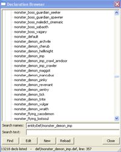
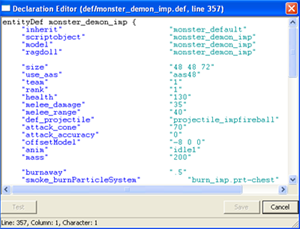

|
|
| Making DOOM 3 Mods : The Decl Editor | |
|
|
 |
|
|
|
The Decl Editors allows you to browse and edit every single decl in the game. Typing "editDecls" actually launches the decl browser, which is slightly different from the decl editor. The Decl Browser

The decl browser shows
all the decls that are loaded by Doom 3. You can filter for specific
decl names by typing a complete or partial name in the 'Search Name'
box and clicking find. You can also search the actual text definition
of the decl by typing something in the 'Search Text' box and clicking
find.
Clicking on a decl and selecting 'Edit' will open that decl in an editor for that specific decl type. For example, sounds will open up in the sound editor, scripts in the script editor, etc. Selecting New will let you create a new decl, and Reload will refresh the list of decls. The Decl Editor

If a decl type doesn't have an editor defined for it, then it will use the
default decl editor. The default editor is just a standard text editor
with basic syntax highlighting. It has special support for def files in
that it will color the 2nd string in a line different from the first
string so it's easy to see the key/val relationship.
The really cool
feature is the 'Test' button. Clicking 'Test' will ensure all the quotes
and curly braces are matched properly, which is very handy.
|
 |
|
| Copyright © 2004 id software |